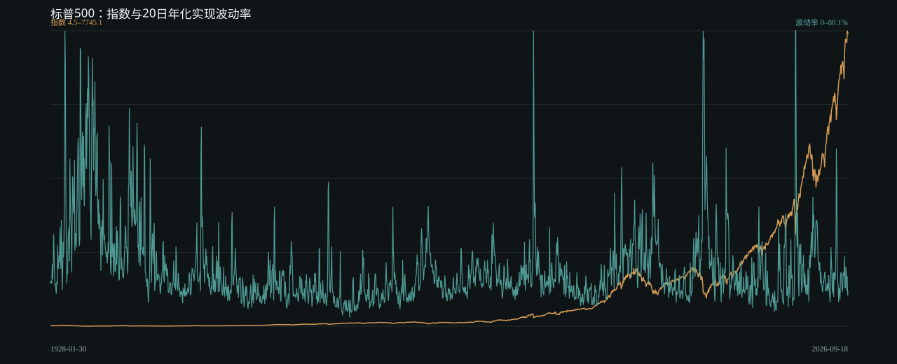
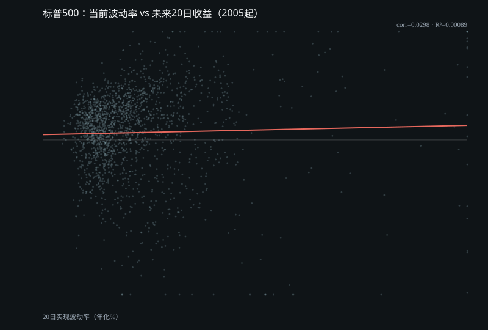
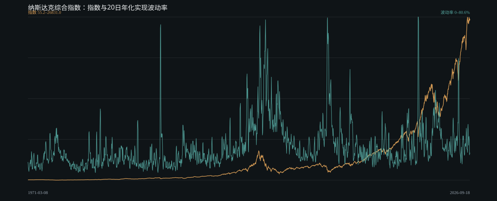
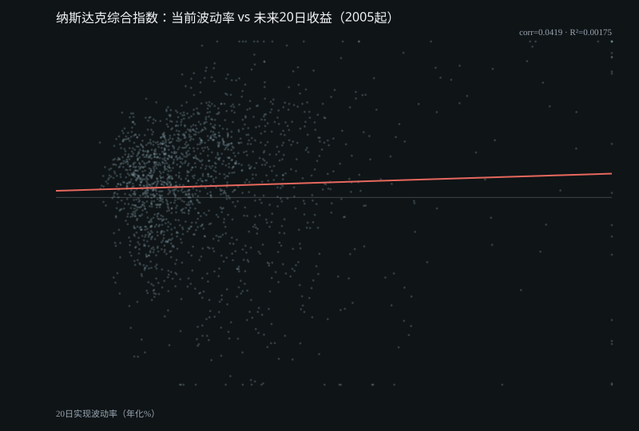
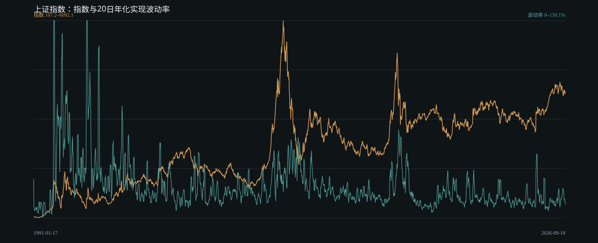
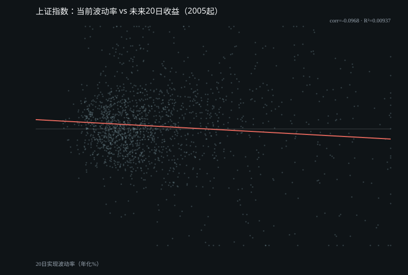
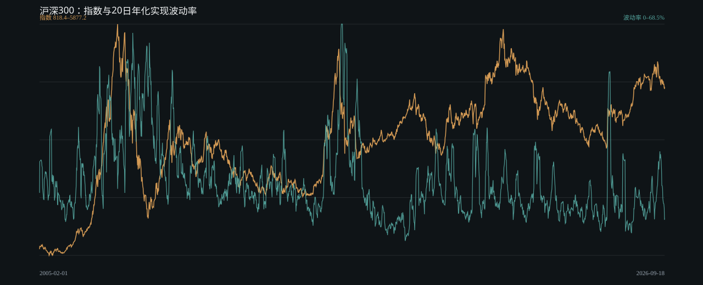
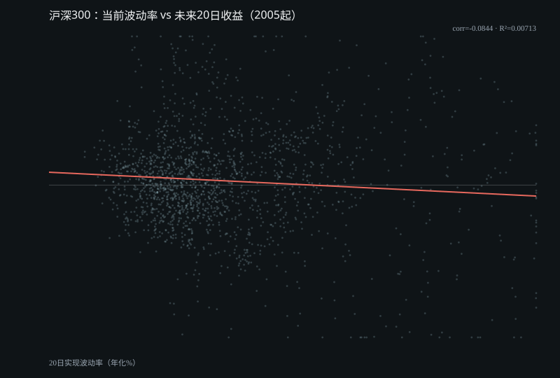

生成时间 2026-09-20T05:50:52.667Z。收益使用日对数收益；实现波动率为过去20个交易日日收益标准差 × √252；“未来20日收益”严格使用随后20个交易日，避免同期机械相关。
标普500
24,796全量交易日8.915%2005起年化收益19.02%2005起年化波动
收益→未来20日波动相关：-0.1258；当前波动→未来20日收益相关：0.0298。


纳斯达克综合指数
14,022全量交易日12.288%2005起年化收益21.659%2005起年化波动
收益→未来20日波动相关：-0.1245；当前波动→未来20日收益相关：0.0419。


上证指数
8,729全量交易日5.535%2005起年化收益23.295%2005起年化波动
收益→未来20日波动相关：-0.0475；当前波动→未来20日收益相关：-0.0968。


沪深300
5,275全量交易日7.549%2005起年化收益25.106%2005起年化波动
收益→未来20日波动相关：-0.0442；当前波动→未来20日收益相关：-0.0844。

